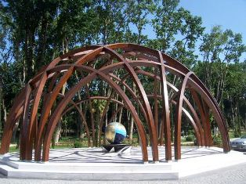

Bilim ve teknoloji tarihinin bütün insanlığın ortak mirası olduğu inancı bu müzenin kuruluşunun esasını teşkil ediyor. Eğer burada alet ve araçlarla İslam kültür dünyasının bu ortak mirastaki payını göstermeye çalışıyorsak da biz, Müslümanların bunlara sıfırdan başlamadıkları gerçeğini, evvela geçmiş kültür dünyalarından, öncelikle Yunanlılardan ve İslam öncesi Bizanslılardan aldıklarını ve geliştirdikleri gerçeğini gözden kaçırmıyoruz. Ama burada sunulanların çok büyük bir kısmı Müslümanların 9. ve 16. yüzyıllar arasındaki yaratıcılık devrelerinde gerçekleştirdiklerinin bazı örnekleridir. Bu örneklerin çok büyük bir kısmı Frankfurt’taki Johann Wolfgang Goethe Üniversitesi’ne bağlı Arab-İslam Bilimleri Tarihi Enstitüsü tarafından kaynaklardaki tarif ve resimlere, çok küçük bir kısmı ise günümüze ulaşan orijinallere dayanarak yapılmış veya yaptırılmıştır.
